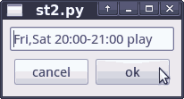

Timer
You can programm play/recording events with the timer plugin. Simply select a station and choose Station ▸ Extensions ▸ Add timer.... A small popup will ask for a data/time string. If you press OK the station and the programmed time will be stored in the bookmarks channel in the "timer" category.

Note that streamtuner2 must be running for the programmed timer events to work. (In a future version there might be the option to have it handled by the system cron daemon.)
Time specification strings
The time and date specificators follow a simple scheme. It's always one or more day names followed by a clock range, and finally the action.
For example "Mon,Tue,Wed" will make the event occour on the first three days of each week, while just "Fri" would limit it to Fridays.
A clock range of "18:00-20:00" would start the event at 18 o'clock and last it two hours. Note that for "play" events, the end time is irrelevant, since streamtuner2 can't kill your audio player anyway.
The end time is only important, if you replace "play" with the word "record" in the timer event string. This runs streamripper instead and limits the recording time.
Editing events
You can remove entries from the "timer" list again. Use the normal Edit ▸ Delete for that. It's also possible to modify the date+time strings by editing the stream info and the specification in the "playing" field.
However, such changes don't take effect until you restart streamtuner2. The timer events are only scheduled when adding a new event, or on starting streamtuner2.